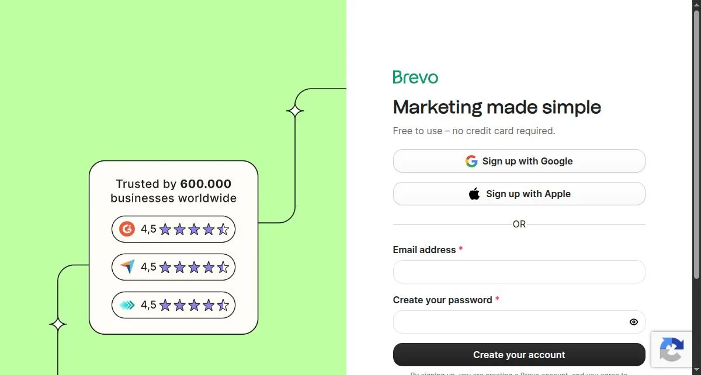
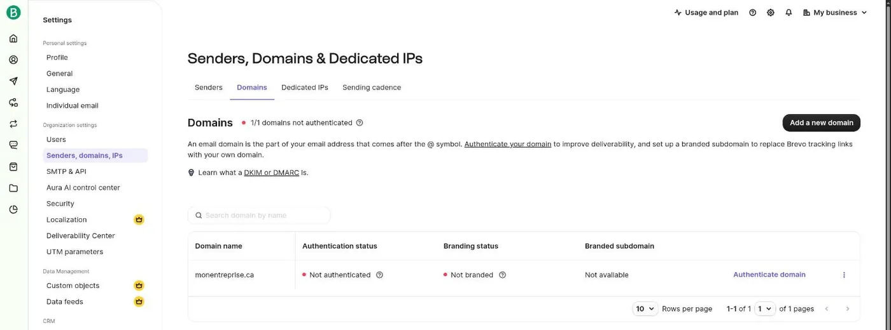
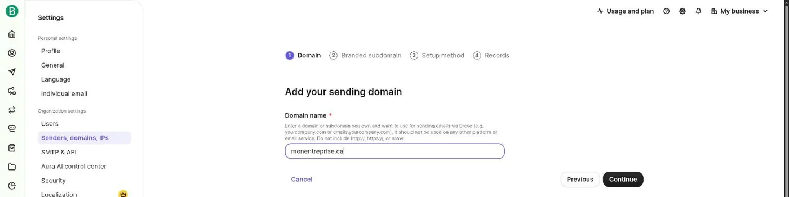
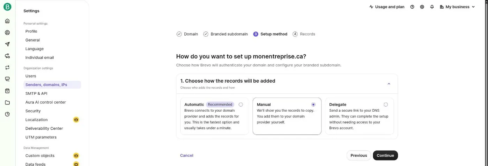
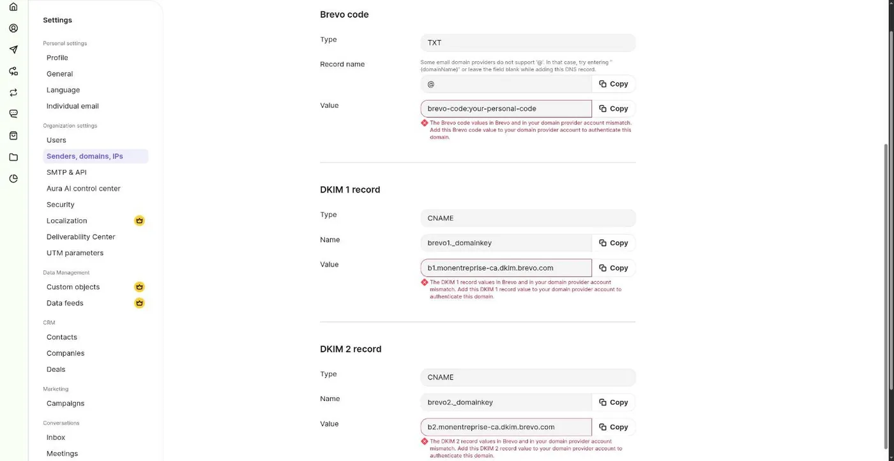
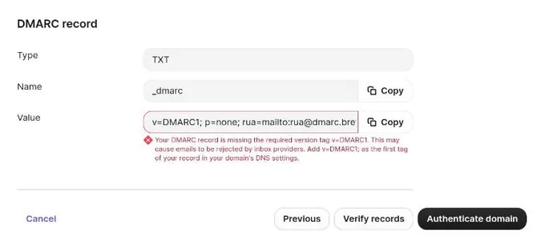
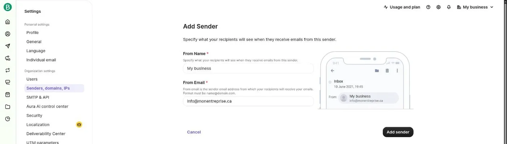
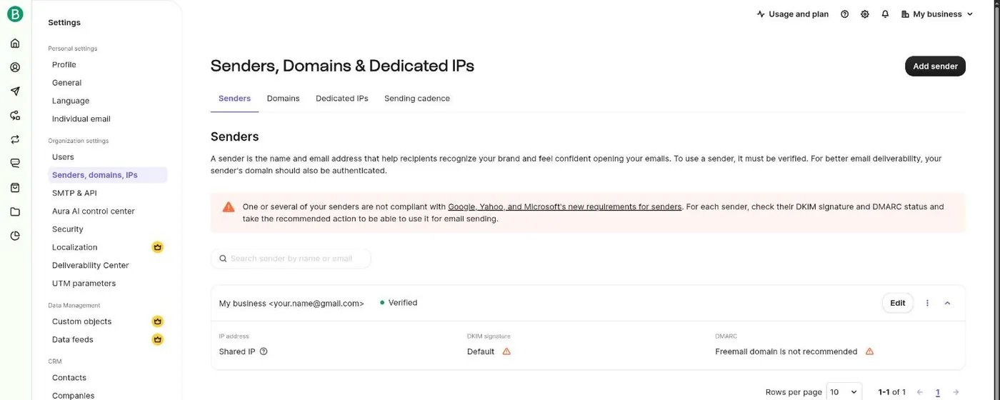
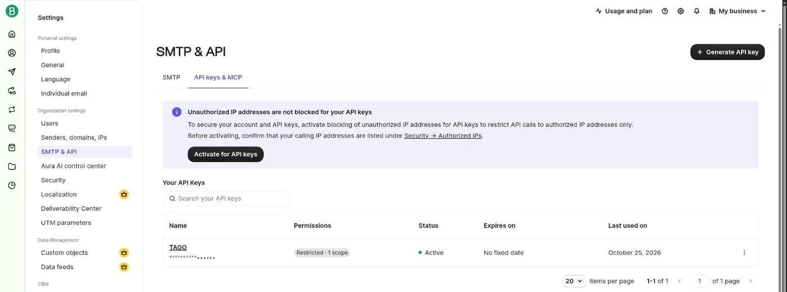
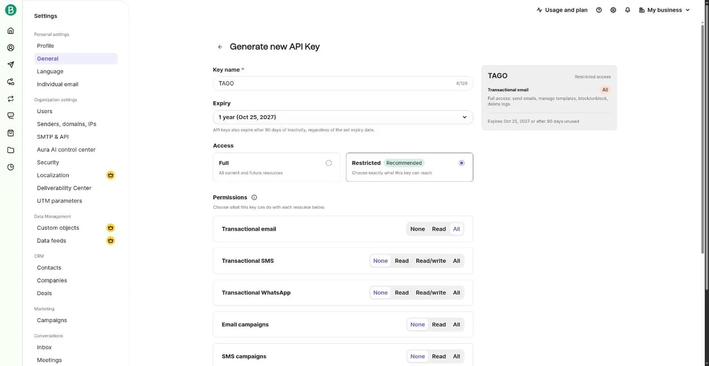

Sending your invoices with Brevo
With nothing set up, TAGO sends your documents through your phone's email app. With your own Brevo account (free), TAGO sends them itself: it retries on its own after a temporary outage and records the sending on the document. This page shows every screen as it was on October 25, 2026. Brevo sometimes changes its interface: if a label has moved, look for the closest word.
TAGO has no server: the key stays on your phone, and sending goes straight from your phone to Brevo (France, European Union). Brevo receives the PDF and the client's name and email; see what that means under Act 25.
1. Create the Brevo account
Go to brevo.com and sign up, with your email or with Sign up with Google. Brevo then asks for your business name and address.

When Brevo asks you to pick a plan, the paid plans come first. The free plan is at the very bottom of the page: scroll down past them to the Free plan and select it. No card is required, and the free plan is plenty for sending invoices.
Brevo may show a banner asking you to verify your phone before your first sends. Follow its link: a code arrives by text message.
All the settings below are under the gear icon, top right.
2. With your own domain (recommended)
If your business address is on a domain you own, like info@mybusiness.ca, authenticate that domain with Brevo. That is what proves to your clients' mailboxes that Brevo may send on your behalf, and what keeps your invoices out of spam. No domain? Read section 3, or see how to buy one: a .ca costs about fifteen dollars a year, and it will also serve your website.
Add the domain
Gear › Senders, domains, IPs, Domains tab, then Add a domain (Add a new domain once the list isn't empty).

Type your domain alone, without www. or @, then Continue. The Branded subdomain step that follows is optional: skip it.

monentreprise.ca).Choose the method
Automatic (“Recommended”): Brevo connects to the provider where you bought the domain and adds the settings itself; you only sign in there when asked. Manual: Brevo shows the values and you copy them to your provider yourself. Delegate sends a link to whoever manages your domain.

The records, done manually
In manual mode, Brevo shows four DNS records to create at your domain provider. The Copy button next to each value avoids typos.
- Brevo code: TXT, name
@, valuebrevo-code:…(yours is unique). If your provider rejects@, leave the name blank. - DKIM 1 and DKIM 2: CNAME, names
brevo1._domainkeyandbrevo2._domainkey. - DMARC: TXT, name
_dmarc, a value starting withv=DMARC1;. If your domain already has a DMARC record, don't create a second one: keep the existing one.


Once the records are created, tap Verify records, then Authenticate domain. A DNS change often takes a few minutes, sometimes up to 48 hours: come back to the Domains tab later if needed.
Add your sending address
Senders tab › Add sender. The name is what your clients will see. The address must be exactly the email in your business profile in TAGO. Pick an address that receives replies (info@), not a noreply@: it's the one printed on the invoice.

3. Without a domain: it works, with limits
With a Gmail, Outlook or Yahoo address, there is nothing to authenticate: when you sign up, Brevo already creates a Verified sender with your account's address. It also shows “Freemail domain is not recommended”.

What happens when you send, observed with TAGO on October 25, 2026:
- Brevo replaces the sending address: your client sees the email come from
your.name@123456.brevosend.com, not from your Gmail. Brevo does this for every free address, because of Gmail, Yahoo and Microsoft's rules. - When your client taps Reply, the reply does go to your Gmail address.
- An unfamiliar address can make a client wary, and Brevo warns that these sends are more likely to land in spam.
Without a domain, TAGO's Send by email button is often the better choice: it goes through your own email app, so the client sees your real address. You only lose automatic sending and retries.
4. Generate the API key
Gear › SMTP & API. The page opens on the SMTP tab: switch to the API keys & MCP tab, because an SMTP key doesn't work in TAGO. Then tap Generate API key.

- Key name:
TAGO, to recognize it later. - Expiry: 1 year by default; no expiry is also offered. Either way, Brevo disables a key left unused for 90 days. You'd then generate a new one and paste it into TAGO again.
- Access: Restricted, then Transactional email: All. Everything else can stay at None: TAGO needs nothing more.

Tap Generate. The key is shown only once: copy it right away and paste it into TAGO. Don't send it to anyone and don't keep it in a note: it lets someone send email in your name. A lost key can't be recovered: delete it in Brevo and generate another.
5. In TAGO
- In your business profile, the email must be the Brevo sender's address:
info@mybusiness.cawith a domain, or your Gmail without one. - Open ⋮ › Invoices and PDF. Under Direct sending (Brevo — optional), choose Brevo, paste the key into New API key, then tap Save key. It's kept encrypted on the phone, never in backups.
- On a document, Send via Brevo becomes the main button; Send by email is still offered under More actions (the ⋮ at the bottom left). Do a first test to your own address.
Once sent, the document records it under Sending history, with the recipient's address.
6. If it doesn't work
“Brevo rejects the API key”
The key was miscopied, deleted or has expired: past its expiry date, or after 90 days without sending. Check that it comes from the API keys & MCP tab and not the SMTP tab, then generate a new one if needed.
“… is not a verified sender in Brevo”
The email in your TAGO business profile matches no verified sender and no authenticated domain at Brevo. Compare the two letter by letter. With a domain, wait until the Domains tab shows it authenticated.
Sending succeeded, but the client got nothing
Brevo accepted the email, but the client's mailbox most likely filed it as spam. Ask them to check that folder. If it keeps happening, it's almost always a domain issue: see section 2.
“Brevo refuses to send from this account”
Brevo is blocking the account itself. A new account sometimes has to verify its phone number before its first sends: look for the banner at the top of Brevo's dashboard. If you turned on blocking of unauthorized IP addresses for API keys (Security), turn it off: a phone's IP address changes all the time.
Another question: travailleurautonomego@gmail.com. Back to the guide.